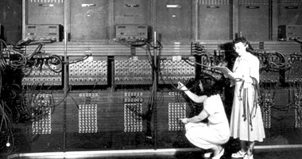
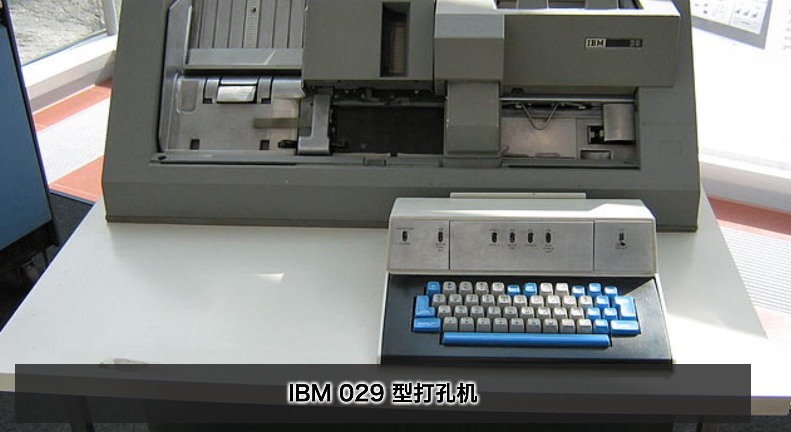
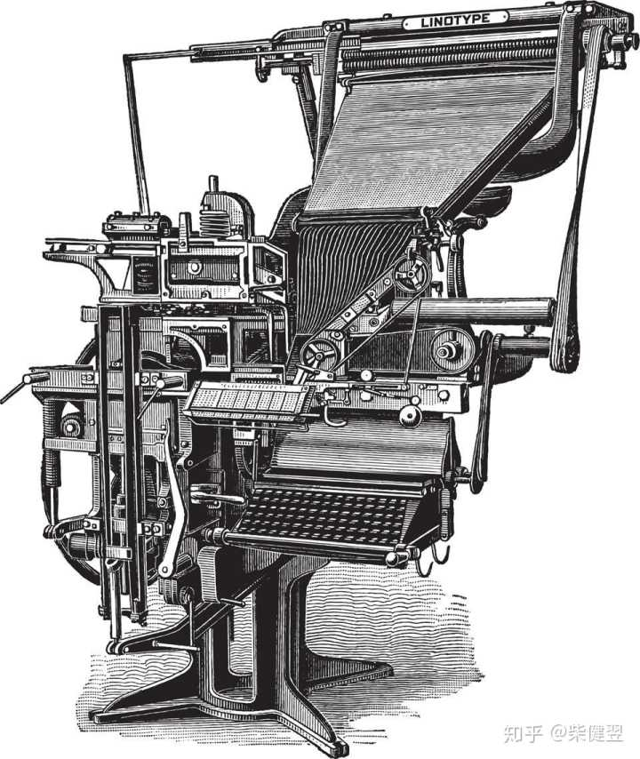
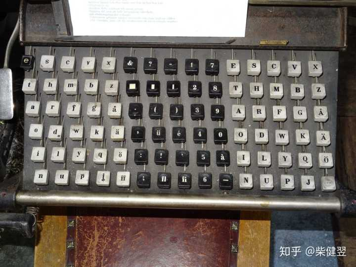
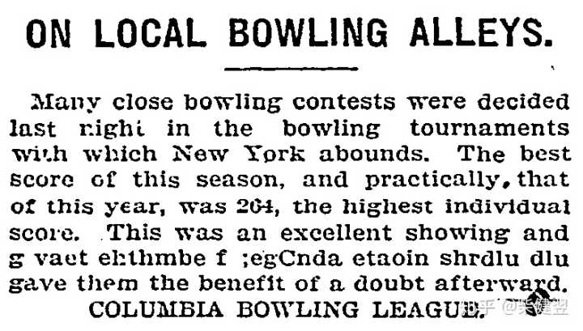

2022-09-06
如果你是加里·基尔代尔博士，当时面对微软的竞争你会怎么做？ #

这个问题应该没有什么标椎答案。我阅读相关资料，有人说基尔代尔博士是一位计算机发展史上完全被低估贡献的极客，还有人说钱是万能的，历史的小姑娘被人打扮了，比尔·盖茨在他的著作《未来之路》中刻意将卖给他QDOS（一个DR-DOS的变种）的蒂姆·帕特森捧了出来，淡化了基尔代尔在DOS系统发展史上的贡献。甚至称通过抄袭赚了7.5万美元的蒂姆·帕特森为「DOS之父」，天哪，哈哈，如果蒂姆·帕特森是DOS之父，那么基尔代尔博士在历史上又做了什么？
对此我有不同的看法。历史是一个小姑娘，谁都可以打扮，既可以往左打扮，也可以往右打扮；比尔·盖茨的书不可以全信，但借此批评比尔·盖茨的文章也未必值得全信。基尔代尔博士在DOS发展史上的贡献毋庸置疑，盖茨在《未来之路》中的叙述确实也有失大方，但我想说的是，这里面已经发生的事，有各自的缘由，这些对我们都不重要，重要的是我们从这段历史中能得到什么启示？
三点启示 #
读史使人明智，基尔代尔博士为什么没能创建一个微软？微软的商业模式在当时为什么可以如此成功？这里面至少有3点启示：
- 一，一定要开放，Unix于1969年就被开发出来了，但它却没有比7年后，1976年诞生的MS-DOS的前身——CP/M获得更多的用户市场；
- 二，一定要重视生态，IBM的OS/2 Wrap系统不比微软的MS-DOS系统做的好吗？当然不是，只因为微软先发制人，占领了市场先机，致使后来者即使再优秀也不能取而代之；
- 三，一定要有一个好的商业模式。在微软还没有起飞之前，基尔代尔博士的DR（Digital Research，数字研究所）公司在微机市场占有最大的市场份额，这种情况下为什么微软还可以发展起来？微软的商业模式既保持了生态上的开放性，在开放的同时又最大化保护了自己的利益。微软的操作系统是与硬件绑定的，厂家每卖出一个电脑，微软就会自动卖出一个系统。
计算机系统的进化史 #
为了了解微软为什么可以崛起，我们又必要先梳理一下计算机系统的发展史。
开关编程 #

早期1946年世界上第一台计算机ENIAC诞生时，是没有操作系统的，那个时候计算机就是一台北京三室一厅那么大号的电子计算器，计算机小姐（Computer Lady，是真正的小姐，有知识有文化）需要在ENIAC上手动拨动开关，以进行编程。就像在计算器上按键一样，不是大号的计算器是什么？那个时候计算机的主要功能也是计算，和计算器没有区别。
手动拨动开关进行编程的效率肯定低了，也容易出错。最主要的是计算效率低，有计算任务的人要使用计算机，只能一个一个排队来。
纸带打孔编程 #
后来人们从可编程纺织机上获得了灵感，发明了纸带打孔编程。开关只有两个状态，不是0就是1，上机前先在纸带上把要输入的0、1数据在纸带上准备好，等计算机有了空，拿纸带往机器上输入就是了。用纸带打孔编程，不仅提高了计算机的利用效率，还减少了出错率，因为纸带方便多人检查嘛。



加里·基尔代尔一生赚了多少钱？ #
1981年，数字研究公司收入600万美元，基尔代尔本人财富1500万美元。
写了多少书？有什么成就？ #
他喜欢教书，是位出色的教师，和学生关系融洽，出过几本著作。他的工作也使他有时间编程序。可以说，学术界的氛围让他如鱼得水。
DOS是什么？ #
Disk Operating System的简写。DOS的功能其实是非常强大的，以及DOS软件拥有巨大的开发潜能，因为像Windows那样强大的DOS增强程序都可以编出来。
GUI指什么？
Graphical User Interface，图形用户接口，指采用图形方式显示的计算机操作用户界面。
基尔代尔的生平 #
1942年5月19日，加里·基尔代尔出生于美国西北部的西雅图，他在那里生活到27岁。是盖茨的同乡。在高中，他并不是明星学生，他喜欢新奇的玩意儿和汽车。他设计制造过一个自动防盗报警器，一个用磁带录音机来使用摩斯代码的机器，和一个触发二进制转换器。他喜欢长时间地摆弄电话装置，其沉迷程度就像后来的黑客沉迷于计算机。
1960年初，在基尔代尔上大学前两年，他在西雅图他父亲的航海学校任教。在那里，他对数学产生了浓厚的兴趣，但是航海是一个以老技术为主的领域。他去了华盛顿大学学习，本科念的是数学。刚进大学时，他选修了两门计算机编程方面的课程，这决定了他的将来。他用老式手工计算器进行数字分析方面的研究，但当他学完课程时，他已经涉入FORTRAN程序。他被计算机的缺陷所困扰，整晚把时间花在大学的计算机中心。1962年，基尔代尔与多露西·麦克艾文（Dorothy McEwen）结婚，他们的婚姻维持了20年，有两个孩子。
越战开始，基尔代尔应征入伍。他加入了海军预备队，因此可以继续完成学业。他在罗德岛的军官后备学校呆了两个夏天。1967年，他获得计算机科学学士学位，留在华盛顿大学学习计算机科学的研究生课程。在大学的计算机中心，基尔代尔晚上在Burroughs 5500计算机上工作，通过它，基尔代尔学到了许多有趣的新概念，包括块存贮分配技术。深夜的时候，这台机器实质上是他一个人的。他为Burroughs 5500做ALGOL编译，这为他提供了编译经验，这也是他研究生学习的主攻方向。
1969年初，在基尔代尔获得硕士后，他应召为军队服务，他有两个选择：登上开往越南的驱逐舰或在加利福尼亚蒙特雷的海军研究生院教计算机科学。“我只用了两毫秒就做出了选择。”他在美国海军研究生院教了三年计算机科学，又开始了博士生学习，方向是编译代码的优化，他的论文题目是《总流量分析》，用来决定如何使机器代码尽可能地简洁。1972年，获华盛顿大学计算机科学博士学位，参加了美国海军，秋天被分到加州蒙特利的美国海军研究生学院，担任电脑讲师，主要从事软件方面的研究。
编写CP/M，开始发迹 #
1972年，他偶然发现在华盛顿大学公告板上有一则广告：“25美元卖一台微机”。因为教学需要，他买下了它，这是一台英特尔4004的4位微处理器，是第一台使用芯片的计算机。甚至当时没有人认为微处理器有什么用处，包括英特尔。此前，他一直用的是海军学校价值300万美元的IBM 360系统计算机。基尔代尔计划用这个芯片制作一一个导航计算器，他父亲一直想有一个可以计算导航三角形的设备。基尔代尔试着在4004上写一些技术性的程序，但很快意识到指令到指令集很有限。他又询问英特尔是否对他在4004上编的程序感兴趣，虽然英特尔对导航应用并无特别兴趣，但他们发现他的数学程序很诱人。
以往，计算机存储数据、数据处理和数据控制三部分是分开的。微处理器的出现实现了使其三合一。因此程序也需要“微小化”。基尔代尔使用二级法，先在DEC的PDP-10小型机上为4004创建新的“微程序”。1973年，他参观了英特尔的微机部，当时这家刚刚创办的公司只有几间破房屋。基尔代尔与英特尔的人很投缘，他用每周一天的休息日担任英特尔的顾问。他不但喜欢上了新职务，而且也迷上了微处理器。不久英特尔又让他试用新出炉的8008，只用了几个月，基尔代尔创建了PC史上革命性的微处理程序设计语言PL/M，为微处理器赋予了真正的生命，打通了微处理器与微电脑的通道。它很容易被接受了，它用于大量的开发系统软件如字处理器、编辑器和汇编语言。然后，基尔代尔开始为8080微处理器开发PL/M的不同版本，这个芯片取代了8008，并成为微型计算机革命的真正开始。
DOS之前，计算机是怎么运行的？ #
下面这个过程有点瑕疵。
最早的大型机（1945）是打孔纸带，上面直接记录了机器码和数据，输出也是打孔纸带。也就是说是直接编写机器码运行。
内存容量上来了之后出现了FORTRAN（1954）编译器，也是打孔纸带（评论指出：是打孔纸卡），但是内容变成了FORTRAN命令，易用性不可同日而语。但是FORTRAN过于偏向学术/数学用途，并不适合数据处理，数年后由计算机业界“灭绝师太”格蕾丝·赫柏主导定制了COBOL语言（1959），并大受政商领域欢迎。
不过这些编程语言或多或少较为复杂，难于学习，达特茅斯学院的两位教授于1964年推出了BASIC语言。不过由于功能没有FORTRAN和COBOL强大，所以此时多作为教学使用。
后来内存容量进一步增加，并且横空出世了一种彻底改变了人机交互方式的设备：终端（1963）。是一种电动打字设备，最重要的特性是可以接受主机端反馈自动敲打字符。相当用纸张实现了现代电脑屏幕的功能。
K&R两位大前辈就用这样的设备编写了C语言和Unix（1969），黑暗时代终于结束。瞬间普及到了整个学术界。
之后的许多大型机和小型机就这么用着Unix了。虽然有一些电脑公司试图推广自己的操作系统，但是大多数不成气候。不过IBM在Unix诞生的三年前推出了OS/360系列（1966），配合COBOL语言在政商领域一统江湖。
到了70年代，集成电路迅猛发展，以前需要占地数平方米，用成千上万个电子管才能实现的功能现在用一块小小的芯片就能做到，“微机”的改念就此诞生。1974年，Intel的8080处理器面世，由于其完善的功能，市面上采用这款CPU作为主处理器的微机雨后春笋般推出。
由于BASIC简便易用的特性，这些电脑的ROM之中通常提供了BASIC解释器，开机会自动进入BASIC模式，可以立即开始BASIC程序的编写。当然，也可以执行机器指令。不过汇编软件在当年是比较贵的产品，一般用户消费不起，都是商业公司在用。
当时市面上清一色的8080/Z80微机，加里·基尔代尔看到了商机，于1976年推出了CP/M操作系统，适配市面上几乎所有的8080兼容微机一统江湖。这款操作系统的操作已经和DOS很接近了，但是缺少完善的目录系统（因为那时基本都用软盘，微机上几乎没有硬盘可用，没有需求）。
之后，IBM于1981年推出PC-AT，本打算用CP/M的16位版CP/M-86作为操作系统，但是由于加里·基尔代尔傲慢无比的对应，让IBM耐心尽失，被比尔盖茨抓住机会承包了操作系统的开发，DOS 1.0便横空出世。而由于PC架构的开放性，许多厂商都纷纷推出自己的兼容产品，PC架构便迅速的统一了政商领域。不过由于一开始研发目标就是商务领域，虽然16位CPU性能较强，但音画方面非常孱弱，家用娱乐还是以各种8位机为主。
Unix系统为什么没有流行？ #
当年IBM想搞一个完全公开的硬件体系，然后请了微软帮这个体系做操作系统。于是就有了这么一个合作，IBM PC 的这个公开标准，从那个时候开始确立，这就是我们现在使用的个人电脑。而大家也疯狂的涌向这个公开标准，更多的程序员为它制作应用。生态环境得以确立。而 Linux 直到多年以后才诞生，才开始支持这个体系。Linux本身来源于对Unix功能的实现，功能较多较复杂，早期PC的性能根本不足以流畅运行Linux，直到80386时代，才算是诞生了第一款能流畅运行Linux的PC平台。而这个时候，微软基于PC构建的生态环境已经非常稳固了。
IBM 很可能非常后悔当年请微软来做这个操作系统而没有自己做，后来 IBM 做了 OS/2 Warp，系统本身非常优秀，当年IBM的实力也绝对不会比微软弱，可这个优秀的系统依然无法战胜微软。
Linux常常被批评的所有缺点，OS/2 Warp 都没有，但它还是无法战胜微软。所以很多人以为的那些缺点其实并不是Linux无法战胜微软的原因。
别说Linux，任何厂商都无法在桌面端战胜微软，哪怕提出 PC 标准的 IBM 公司也不行。真正的原因，就是先发优势。生态建立起来了，应用围着你转，后来者就没法进入。
这个貌似没有回答。
手机端，其实也差不多。在Android之前，硬件系统也都是封闭的，各家自己出硬件，然后自己做针对自家硬件的操作系统。基于Linux内核的Android是第一家允许手机端公开标准的硬件的智能操作系统，谁都能做，同时谁都可以自行定制操作系统。（当年的WP跟WM其实在硬件方面并没有Android那么开放）。于是这个系统也火了。后来者如果没有特别突出的优势也很难战胜之。微软想要搞WP已经是好几年以后的事，此时安卓已经完全站稳脚跟。
甚至于，在编程领域也是如此：最流行，运用得最广泛，最有前途跟钱途的那些语言，绝对不会是垠神喜欢的那些优秀语言，不是从技术上最优秀的编程语言。而是生态最完备的语言。一个语言建立了有效的应用生态，有大量的现成代码，它就很难再被替换掉，很难再消失。
这个貌似说生态很正要。生态的根本是联系，联系很重要。微软的商业模式，是与硬件绑定的，厂家每卖出一个电脑，微软就卖出一个正版的操作系统。
杀手级应用对硬件厂商和操作系统的重要性？ #
任何一个生态的大规模普及过程中，都必然是有最少一款杀手级应用的推动。所谓的杀手级应用，是指用户愿意为了使用这款应用愿意去购买一整套新的系统——包括必要的硬件和操作系统。例如：
-
第一款普及的个人电脑（不是IBM PC）是苹果的Apple II，推动这款设备的杀手级应用是VisiCalc，一款类似Excel的应用。解决了大量企业制作、更新各种报表的需求。
-
IBM PC的普及是两款杀手级应用的推动：Lotus 1-2-3和WordStar。Lotus 1-2-3是VisiCalc的替代者，WordStar则是一款类似今天的Word的应用。Lotus 1-2-3/VisiCalc满足了企业管理者看报表的需求，WordStar则满足了文员对文档编辑方便的需求——在PC普及之前编辑文档有多麻烦，可以看看这个问题下的回答
-
Windows在桌面的普及过程中，杀手级应用是早期的Office系列和微软推出IE之前的Netscape（一个 浏览器，可能有些年轻的朋友不清楚）。
-
Linux在服务器领域的普及，杀手级应用是Apache和Nginx这两个网站服务器软件。
Mac半死不活撑下来了多年，最主要靠的视频行业的杀手级应用Final Cut；近十年来的重新抬头，则是开发iOS应用必须使用的Xcode。
苹果的iPods：iTunes提供了成套完整的对个人音乐的管理系统，从分发、购买、下载到播放极其简单便捷。之前的MP3/MD等随身播放设备需要自行购买CD并转录或者从各种 音乐网站搜索下载，然后传输到播放设备上，并且因为容量有限用户经常需要频繁更换曲目/介质。
iPhone的普及有三个杀手级应用。iTunes：延续了iPod的成功，并且可以脱离PC/Mac独立使用；搭配大尺寸触摸屏的Safari：之前的智能手机要么只能看wap版的网页，要么键盘操作极其麻烦；搭配了大尺寸触摸屏，配合 双指手势可以便捷的缩小放大的Safari则是向用户提供了前所未有的移动浏览网页的体验。AppStore：不同于PC和之前的智能手机，软件要去下载网站/开发者官网购买/下载、自行安装，一个应用可以满足用户搜索、购买、下载、安装软件的需求。
Android普及的杀手级应用则是GMS，一整套的 谷歌服务，涵盖搜索、浏览、相册、地图、邮件，以及模仿iOS上AppStore的Google Play。
游戏主机就更不用说了，PS系列Xbox系列都有自己独占的多个杀手级游戏，如 最终幻想、Halo等，但即便这两家巨头的在这个领域的垄断，任天堂的Wii依然凭借Wii Sport杀了出来。即便iOS/Android上有极其丰富的游戏，任天堂依然可以凭借 荒野之息、 奥德赛这两款游戏热卖，硬生生让一众游戏玩家的随身设备中多增加一个不能打电话不能拍照的Switch。
因为应用，最接近用户的需求。用户要买的不是系统，不是电脑，而是解决自己生产、生活中的实际需求。
硬件驱动的问题，主要是存储厂商的官方支持不够。这个问题还是源于freebsd团队本身，linux内核和驱动的书还有那么几本，freebsd呢，完全没有。想写freebsd的驱动，你还得先去学写linux的驱动，然后还要看一大堆文档和源码。大部分人学会了写linux的驱动后，为什么还要多此一举的去学写fb的驱动呢？ 因此fb的驱动开发者数量很少。硬件厂商找个团队开发for freebsd的驱动的成本太高。 如果freebsd在普及方面下点功夫，情况会好得多。
还是开放与生态的问题，硬件不开放，生态没有建立起来。
老式打字机的麻烦之处 #
有一种非常神奇的机械式铸排打字机叫Linotype，一人多高，用金属字模和熔化的铅现打现铸，铸出来每行字都是一整个铅块，可以直接拿去印刷，看上去非常 蒸汽朋克。这种机器和同类产品在西方新闻行业上百年几乎处于垄断地位，直到计算机兴起才逐渐被取代

这种机器要是打错一个字，要把机匣打开，把错字挑出来，再倒回去重新调整行距等等，非常麻烦，也不能直接另起一行，因为换行会导致这一行自动被送去浇铸，这一行字模不够的话，浇铸腔填不满，会导致 铅水飞溅出来十分危险。所以打字员发明了一种非常省事的办法，直接照着键盘刷一下撸过去，出来几十个字把这行填满停机，然后在下一行重新打过。铸出来的 铅块里直接抽掉错误的一行就是了

这种打字机因为是出版行业用的，键盘设计按照英语字母使用频率排列，左手第一列第二列分别是etaoin shrdlu。有时候打字员疏忽没把错行挑掉，这串字就印到报纸上了。久而久之连行业外的人都知道了这串字，甚至收录进了词典，维基百科也有这个词条

倒数第三行就打错了。
CP/M恰恰是因为开放与兼容而成功的。微软在CP/M的基础之上，控制了开放性，通过与微机电脑厂商绑定，保证了MS-DOS/Windows系统普遍推广开来，而取得了巨大的成功。微软的成功，是与时俱进、乘风而起的成功。比尔盖茨如果不退学，创立微软的可能就是另一个家伙了。
参考 #
作者：pig-10 链接：https://www.zhihu.com/question/300351576/answer/520194587 来源：知乎 著作权归作者所有。商业转载请联系作者获得授权，非商业转载请注明出处。
作者：pansz 链接：https://www.zhihu.com/question/326164970/answer/996071332 来源：知乎 著作权归作者所有。商业转载请联系作者获得授权，非商业转载请注明出处。
作者：柴健翌 链接：https://www.zhihu.com/question/24628822/answer/472088712 来源：知乎 著作权归作者所有。商业转载请联系作者获得授权，非商业转载请注明出处。
作者：知乎用户FgYsEo 链接：https://www.zhihu.com/question/23713616/answer/33635688 来源：知乎 著作权归作者所有。商业转载请联系作者获得授权，非商业转载请注明出处。
Comments